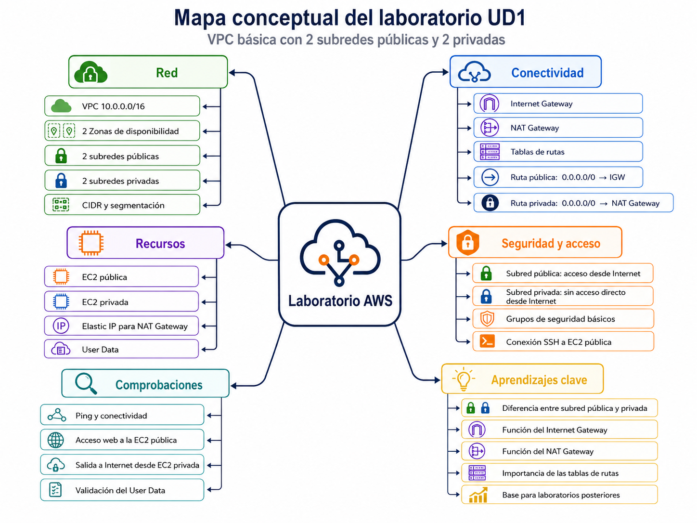
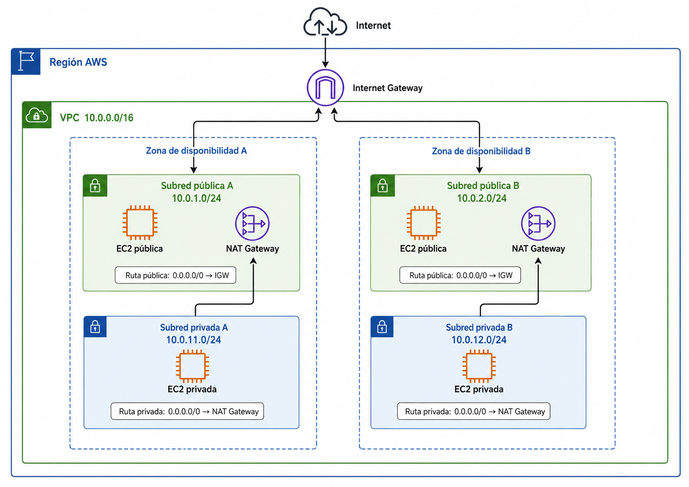

UD1. Fundamentos de redes cloud en AWS¶
1. Datos generales¶
| Elemento | Descripción |
|---|---|
| Duración | 15 horas |
| Temporalización | Semanas 1, 2 y 3 |
| Proveedor principal | AWS |
| Servicio central | Amazon VPC |
| Práctica evaluable | P1. Diseño y despliegue de una VPC base |
| Resultado de aprendizaje principal | RA1. Despliegue de infraestructura de red en la nube |
| Resultados relacionados | RA2. Configuración de recursos de red, balanceo y escalado |
2. Propósito de la unidad¶
Esta unidad introduce los fundamentos de red necesarios para administrar infraestructuras cloud en AWS. El alumnado aprenderá a diseñar una red virtual básica, configurar direccionamiento, crear subredes públicas y privadas, asociar tablas de rutas, permitir salida a Internet y desplegar instancias de prueba.
La unidad es la base del resto del módulo. Las configuraciones creadas aquí se reutilizarán posteriormente para trabajar seguridad, balanceadores, VPN, endpoints privados, WAF, logs y proyecto final.
3. Resultados de aprendizaje y criterios de evaluación¶
Resultados de aprendizaje¶
- RA1. Aplica procedimientos de despliegue de una infraestructura de red asociada a las aplicaciones de unos sistemas, configurando la privacidad, ciberseguridad y disponibilidad, para permitir la conectividad entre recursos de la nube y otras instalaciones propias, on-premise, o en otras nubes.
- RA2. Configura recursos de red, asignando parámetros de balanceo y escalado horizontal y vertical, desde orígenes externos o internos, en condiciones de ciberseguridad, direccionando y enrutando el tráfico a los recursos desplegados en la nube.
Criterios de evaluación relacionados¶
| Código | Criterio |
|---|---|
| RA1.a | Configura redes virtuales con rangos de direcciones IP, zonas de disponibilidad o regiones, direccionamiento privado, direccionamiento público, puertas de enlace, cortafuegos, grupos de seguridad y delegación de subredes. |
| RA1.f | Establece el enrutado y la conexión entre sistemas locales y servicios WAN de red para los escenarios que lo requieran. |
| RA2.d | Establece opciones de traducción de direccionamiento público para compartir direcciones públicas entre varios recursos. |
| RA2.e | Establece direccionamiento público y privado para los recursos de red que lo requieran, reservando direcciones IP estáticas internas o externas según las necesidades de conectividad. |
4. Objetivos didácticos¶
Al finalizar la unidad, el alumnado deberá ser capaz de:
- Explicar qué es una VPC y qué función cumple en una arquitectura cloud.
- Diseñar un plan de direccionamiento CIDR coherente.
- Diferenciar subred pública y subred privada.
- Crear una VPC con varias subredes en distintas zonas de disponibilidad.
- Configurar un Internet Gateway para permitir acceso a Internet desde subredes públicas.
- Configurar un NAT Gateway para permitir salida a Internet desde subredes privadas.
- Crear y asociar tablas de rutas a subredes.
- Desplegar instancias EC2 en subred pública y privada.
- Usar User Data para automatizar la instalación de un servicio básico.
- Verificar conectividad y diagnosticar errores básicos de rutas.
- Documentar la arquitectura desplegada de forma técnica.
- Eliminar recursos para evitar costes innecesarios.
5. Conceptos clave¶
5.1. Amazon VPC¶
Una Amazon Virtual Private Cloud es una red virtual aislada dentro de AWS. Permite definir un rango de direcciones IP, crear subredes, configurar rutas y controlar cómo se comunican los recursos.
En esta unidad se trabajará una VPC sencilla con arquitectura pública/privada.
5.2. Región y zona de disponibilidad¶
- Región: área geográfica donde AWS agrupa centros de datos.
- Zona de disponibilidad: ubicación aislada dentro de una región.
Para mejorar disponibilidad, las subredes se distribuirán en al menos dos zonas de disponibilidad.
5.3. CIDR¶
El bloque CIDR define el rango de direcciones IP de la VPC y de cada subred.
Ejemplo propuesto:
| Recurso | CIDR |
|---|---|
| VPC | 10.10.0.0/16 |
| Subred pública | 10.10.1.0/24 |
| Subred privada | 10.10.11.0/24 |
5.4. Subred pública¶
Una subred es pública cuando su tabla de rutas contiene una ruta por defecto hacia un Internet Gateway.
Ruta típica:
| Destino | Target |
|---|---|
10.10.0.0/16 |
local |
0.0.0.0/0 |
Internet Gateway |
5.5. Subred privada¶
Una subred privada no recibe tráfico entrante directamente desde Internet. Puede tener salida a Internet mediante un NAT Gateway situado en una subred pública.
Ruta típica:
| Destino | Target |
|---|---|
10.10.0.0/16 |
local |
0.0.0.0/0 |
NAT Gateway |
5.6. Internet Gateway¶
El Internet Gateway permite que recursos con IP pública o Elastic IP puedan comunicarse con Internet, siempre que la tabla de rutas y las reglas de seguridad lo permitan.
5.7. NAT Gateway¶
El NAT Gateway permite que instancias en subred privada inicien conexiones hacia Internet, por ejemplo para actualizar paquetes o descargar software, sin permitir conexiones entrantes no solicitadas desde Internet.
5.8. Tabla de rutas¶
Una tabla de rutas contiene reglas que indican hacia dónde se envía el tráfico. Cada subred debe estar asociada a una tabla de rutas.
5.9. EC2 y User Data¶
Amazon EC2 permite desplegar máquinas virtuales. Con User Data se pueden ejecutar comandos de inicialización al arrancar una instancia, por ejemplo instalar un servidor web.
Ejemplo de User Data para Amazon Linux:
#!/bin/bash
dnf update -y
dnf install -y httpd
systemctl enable httpd
systemctl start httpd
echo "<h1>UD1 - Servidor web en AWS</h1>" > /var/www/html/index.html
6. Mapa conceptual¶

7. Arquitectura objetivo de la unidad¶

8. Secuencia de sesiones¶
| Sesión | Horas | Contenido | Actividad principal | Evidencia |
|---|---|---|---|---|
| Sesión 1 | 2 h | Introducción a redes cloud, VPC, regiones, AZ y CIDR | Diseño en papel de una VPC | Tabla CIDR inicial |
| Sesión 2 | 3 h | VPC, subredes e Internet Gateway | Creación de VPC y subred pública | Capturas de VPC y subredes |
| Sesión 3 | 2 h | Tablas de rutas y acceso público | EC2 en subred pública | Prueba de acceso HTTP/SSH |
| Sesión 4 | 3 h | Subred privada, NAT Gateway y rutas privadas | EC2 privada con salida a Internet | Prueba de salida desde subred privada |
| Sesión 5 | 2 h | User Data y validación de servicios | Instalación automática de Apache/Nginx | Servicio web funcionando |
| Sesión 6 | 3 h | Documentación, troubleshooting y limpieza | Finalización de P1 | Informe técnico y checklist |
9. Actividades de aula¶
Actividad 1. Diseño de direccionamiento¶
Objetivo: comprender la planificación de rangos de red antes de crear recursos.
Desarrollo:
- Se entrega al alumnado el escenario de una empresa ficticia.
- Deben proponer un CIDR para la VPC.
- Deben dividir el rango en subredes públicas y privadas.
- Deben justificar por qué las subredes no se solapan.
Producto: tabla de direccionamiento.
Actividad 2. Identificación de subred pública y privada¶
Objetivo: diferenciar subredes por su tabla de rutas, no solo por su nombre.
Desarrollo:
El alumnado recibe varias tablas de rutas y debe clasificar las subredes como públicas o privadas.
Preguntas guía:
- ¿Tiene ruta
0.0.0.0/0? - ¿El destino de esa ruta es un Internet Gateway o un NAT Gateway?
- ¿Puede recibir conexiones desde Internet?
- ¿Puede iniciar conexiones hacia Internet?
Actividad 3. Diagnóstico de rutas incorrectas¶
Objetivo: aprender troubleshooting básico de conectividad.
Desarrollo:
Se presentan errores frecuentes:
- subred pública sin ruta al Internet Gateway;
- subred privada con ruta directa al Internet Gateway;
- NAT Gateway en subred privada;
- Elastic IP no asociada al NAT Gateway;
- EC2 sin IP pública;
- Security Group sin puerto HTTP abierto.
El alumnado debe identificar el problema y proponer la corrección.
10. Laboratorio guiado¶
Lab UD1. Creación de una VPC base pública/privada¶
Objetivo¶
Crear una VPC funcional con subredes públicas y privadas, acceso a Internet desde subred pública, salida a Internet desde subred privada mediante NAT Gateway y una instancia EC2 inicializada mediante User Data.
Recursos a crear¶
| Recurso | Cantidad |
|---|---|
| VPC | 1 |
| Subred pública | 1 |
| Subred privada | 1 |
| Internet Gateway | 1 |
| NAT Gateway | 1 |
| Elastic IP | 1 |
| Route Table pública | 1 |
| Route Table privada | 1 |
| EC2 pública | 1 |
| EC2 privada | 1 |
| Security Group básico | 1-2 |
Aviso de coste
El NAT Gateway, Elastic IP, instancias EC2 y transferencia de datos pueden generar coste. El alumnado deberá eliminar los recursos al finalizar la práctica si no se reutilizan.
Paso 1. Crear la VPC¶
Datos recomendados:
| Parámetro | Valor |
|---|---|
| Nombre | vpc-ud1-redes-nube |
| CIDR IPv4 | 10.10.0.0/16 |
| Tenancy | Default |
| DNS hostnames | Enabled |
| DNS resolution | Enabled |
Paso 2. Crear subredes¶
| Nombre | AZ | CIDR | Tipo |
|---|---|---|---|
subnet-public-ud1 |
AZ A | 10.10.1.0/24 |
Pública |
subnet-private-ud1 |
AZ A | 10.10.11.0/24 |
Privada |
Paso 3. Crear y asociar Internet Gateway¶
- Crear un Internet Gateway llamado
igw-ud1. - Asociarlo a la VPC
vpc-ud1-redes-nube.
Paso 4. Crear tabla de rutas pública¶
Nombre: rt-public-ud1
| Destino | Target |
|---|---|
10.10.0.0/16 |
local |
0.0.0.0/0 |
igw-ud1 |
Asociar esta tabla a:
subnet-public-ud1.
Paso 5. Crear NAT Gateway¶
- Reservar una Elastic IP.
- Crear un NAT Gateway en
subnet-public-ud1. - Asociar la Elastic IP al NAT Gateway.
Paso 6. Crear tabla de rutas privada¶
Nombre: rt-private-ud1
| Destino | Target |
|---|---|
10.10.0.0/16 |
local |
0.0.0.0/0 |
NAT Gateway |
Asociar esta tabla a:
subnet-private-ud1.
Paso 7. Crear Security Group para EC2 pública¶
Nombre: sg-web-public-ud1
Reglas inbound recomendadas para laboratorio:
| Tipo | Puerto | Origen | Comentario |
|---|---|---|---|
| SSH | 22 | IP del aula o del profesor | Administración |
| HTTP | 80 | 0.0.0.0/0 |
Prueba web |
Reglas outbound:
| Tipo | Destino |
|---|---|
| All traffic | 0.0.0.0/0 |
Recomendación
No dejar SSH abierto a 0.0.0.0/0. Si se usa temporalmente por limitaciones del aula, justificarlo y eliminarlo al finalizar.
Paso 8. Lanzar EC2 pública¶
| Parámetro | Valor |
|---|---|
| Nombre | ec2-public-ud1 |
| AMI | Amazon Linux 2023 |
| Tipo | t3.micro o equivalente disponible |
| Subred | subnet-public-ud1 |
| Auto-assign public IP | Enabled |
| Security Group | sg-web-public-ud1 |
User Data:
#!/bin/bash
dnf update -y
dnf install -y httpd
systemctl enable httpd
systemctl start httpd
echo "<h1>UD1 - EC2 publica funcionando</h1>" > /var/www/html/index.html
Paso 9. Lanzar EC2 privada¶
| Parámetro | Valor |
|---|---|
| Nombre | ec2-private-ud1 |
| AMI | Amazon Linux 2023 |
| Tipo | t3.micro o equivalente disponible |
| Subred | subnet-private-ud1 |
| Auto-assign public IP | Disabled |
| Security Group | Security Group restrictivo |
Paso 10. Validaciones¶
Validación 1. EC2 pública¶
- Acceder por navegador a la IP pública de
ec2-public-ud1. - Comprobar que aparece el mensaje de User Data.
Validación 2. Rutas públicas¶
Comprobar que la subred pública tiene ruta:
Validación 3. Rutas privadas¶
Comprobar que la subred privada tiene ruta:
Validación 4. Salida a Internet desde privada¶
Desde la instancia privada, si se accede mediante bastion, SSM o método autorizado, comprobar:
Validación 5. Entrada bloqueada a privada¶
Comprobar que la instancia privada no tiene IP pública y no puede recibir conexiones directas desde Internet.
11. Práctica evaluable¶
P1. Diseño y despliegue de una VPC base¶
Enunciado¶
Una empresa quiere comenzar a migrar servicios a AWS. Necesita una red base en la nube con subredes públicas para servicios expuestos y subredes privadas para recursos internos. La red debe permitir salida a Internet desde las subredes privadas, pero no entrada directa desde Internet.
El alumnado deberá diseñar, desplegar, verificar y documentar la arquitectura.
Requisitos mínimos¶
- Una VPC con CIDR propio.
- Una subred pública.
- Una subred privada.
- Un Internet Gateway.
- Un NAT Gateway.
- Una tabla de rutas pública.
- Una tabla de rutas privada.
- Una EC2 pública con servicio web instalado mediante User Data.
- Una EC2 privada sin IP pública.
- Security Groups básicos.
- Pruebas de conectividad.
- Documentación técnica.
- Limpieza o justificación de recursos mantenidos.
Entrega¶
El alumnado entregará un informe en Markdown o PDF con:
- Diagrama de arquitectura.
- Tabla de direccionamiento.
- Tabla de rutas.
- Capturas de recursos principales.
- Pruebas de conectividad.
- Problemas encontrados y solución aplicada.
- Checklist de limpieza de recursos.
12. Evidencias de evaluación¶
| Código | Evidencia |
|---|---|
| E1 | Diagrama de arquitectura de la VPC. |
| E2 | Tabla de direccionamiento CIDR. |
| E3 | Capturas de VPC y subredes. |
| E4 | Capturas de tablas de rutas. |
| E5 | Captura del Internet Gateway asociado. |
| E6 | Captura del NAT Gateway activo. |
| E7 | Captura de EC2 pública y EC2 privada. |
| E8 | Prueba de acceso HTTP a EC2 pública. |
| E9 | Prueba de salida a Internet desde EC2 privada. |
| E10 | Informe de troubleshooting. |
| E11 | Checklist de limpieza. |
13. Rúbrica orientativa¶
| Criterio | Excelente | Adecuado | Básico | Insuficiente |
|---|---|---|---|---|
| Diseño de direccionamiento | CIDR coherente, escalable y sin solapamientos; subredes bien justificadas. | CIDR correcto y subredes funcionales. | CIDR funcional pero poco justificado. | CIDR incorrecto o con solapamientos. |
| Configuración de VPC y subredes | VPC y dos subredes correctamente creadas y nombradas. | VPC y subredes creadas con pequeños errores de nomenclatura. | Faltan elementos secundarios pero la red básica funciona. | VPC o subredes mal configuradas. |
| Rutas e Internet Gateway | Rutas públicas correctamente asociadas al IGW. | Rutas públicas funcionales con algún detalle mejorable. | Rutas parcialmente correctas. | No hay conectividad pública. |
| NAT Gateway y salida privada | NAT funcional y subred privada con salida a Internet. | NAT funcional con algún problema menor. | NAT creado pero con pruebas incompletas. | NAT ausente o no funcional. |
| EC2 y User Data | Servicio web instalado automáticamente y validado. | EC2 funcional con instalación manual o parcial. | EC2 creada pero validación incompleta. | EC2 no accesible o mal ubicada. |
| Documentación | Informe claro, completo, con diagrama, tablas, capturas y análisis. | Informe correcto con la mayoría de evidencias. | Informe básico e incompleto. | No documenta adecuadamente. |
| Limpieza y control de costes | Recursos eliminados o justificados, con checklist completo. | Limpieza realizada parcialmente. | Limpieza poco documentada. | Mantiene recursos costosos sin justificar. |
14. Errores frecuentes y pistas de troubleshooting¶
| Problema | Posible causa | Comprobación |
|---|---|---|
| La EC2 pública no responde por HTTP | Security Group no permite puerto 80 | Revisar inbound rules |
| La EC2 pública no tiene Internet | Subred sin ruta al IGW | Revisar tabla de rutas pública |
| La EC2 privada no sale a Internet | Falta ruta al NAT Gateway | Revisar tabla de rutas privada |
| El NAT Gateway no funciona | Está en subred privada o sin Elastic IP | Revisar subred y EIP |
| No se puede conectar por SSH | IP origen no permitida o clave incorrecta | Revisar SG, clave y usuario |
| User Data no instaló Apache | Script incorrecto o AMI diferente | Revisar logs cloud-init |
15. Checklist de limpieza de la UD1¶
Al finalizar la unidad, comprobar:
- [ ] Terminar o eliminar las instancias EC2.
- [ ] Eliminar NAT Gateway si no se reutiliza.
- [ ] Liberar Elastic IP si no se reutiliza.
- [ ] Eliminar tablas de rutas no necesarias.
- [ ] Eliminar subredes si se elimina la VPC.
- [ ] Desasociar y eliminar Internet Gateway si se elimina la VPC.
- [ ] Eliminar la VPC si no se reutiliza en UD2.
- [ ] Revisar que no quedan Load Balancers ni endpoints creados por error.
- [ ] Revisar consola de facturación o alertas de presupuesto.
15.1. Script de despliegue automatizado¶
Este script crea la infraestructura mínima de la práctica con una VPC, una subred pública, una subred privada, un Internet Gateway, un NAT Gateway y dos instancias EC2. Requiere tener configurado AWS CLI y un perfil con permisos suficientes para EC2, VPC y IAM.
#!/bin/bash
set -euo pipefail
AWS_REGION="${AWS_REGION:-eu-west-1}"
MY_IP="${MY_IP:-$(curl -fsSL https://checkip.amazonaws.com)/32}"
VPC_NAME="vpc-ud1-redes-nube"
PUB_SUBNET_NAME="subnet-public-ud1"
PRIV_SUBNET_NAME="subnet-private-ud1"
IGW_NAME="igw-ud1"
NAT_NAME="nat-ud1"
PUB_RT_NAME="rt-public-ud1"
PRIV_RT_NAME="rt-private-ud1"
SG_NAME="sg-web-public-ud1"
KEY_NAME="aws-ud1-key"
export AWS_DEFAULT_REGION="$AWS_REGION"
# 1. Crear VPC
VPC_ID=$(aws ec2 create-vpc \
--cidr-block 10.10.0.0/16 \
--tag-specifications "ResourceType=vpc,Tags=[{Key=Name,Value=$VPC_NAME}]" \
--query 'Vpc.VpcId' \
--output text)
aws ec2 modify-vpc-attribute --vpc-id "$VPC_ID" --enable-dns-hostnames
aws ec2 modify-vpc-attribute --vpc-id "$VPC_ID" --enable-dns-support
echo "VPC creada: $VPC_ID"
# 2. Crear subredes
PUB_SUBNET_ID=$(aws ec2 create-subnet \
--vpc-id "$VPC_ID" \
--cidr-block 10.10.1.0/24 \
--availability-zone "${AWS_REGION}a" \
--tag-specifications "ResourceType=subnet,Tags=[{Key=Name,Value=$PUB_SUBNET_NAME}]" \
--query 'Subnet.SubnetId' \
--output text)
PRIV_SUBNET_ID=$(aws ec2 create-subnet \
--vpc-id "$VPC_ID" \
--cidr-block 10.10.11.0/24 \
--availability-zone "${AWS_REGION}a" \
--tag-specifications "ResourceType=subnet,Tags=[{Key=Name,Value=$PRIV_SUBNET_NAME}]" \
--query 'Subnet.SubnetId' \
--output text)
echo "Subred pública: $PUB_SUBNET_ID"
echo "Subred privada: $PRIV_SUBNET_ID"
# 3. Crear e asociar Internet Gateway
IGW_ID=$(aws ec2 create-internet-gateway \
--tag-specifications "ResourceType=internet-gateway,Tags=[{Key=Name,Value=$IGW_NAME}]" \
--query 'InternetGateway.InternetGatewayId' \
--output text)
aws ec2 attach-internet-gateway --vpc-id "$VPC_ID" --internet-gateway-id "$IGW_ID"
# 4. Crear tablas de rutas
PUB_RT_ID=$(aws ec2 create-route-table --vpc-id "$VPC_ID" \
--tag-specifications "ResourceType=route-table,Tags=[{Key=Name,Value=$PUB_RT_NAME}]" \
--query 'RouteTable.RouteTableId' \
--output text)
PRIV_RT_ID=$(aws ec2 create-route-table --vpc-id "$VPC_ID" \
--tag-specifications "ResourceType=route-table,Tags=[{Key=Name,Value=$PRIV_RT_NAME}]" \
--query 'RouteTable.RouteTableId' \
--output text)
aws ec2 create-route --route-table-id "$PUB_RT_ID" --destination-cidr-block 0.0.0.0/0 --gateway-id "$IGW_ID"
aws ec2 associate-route-table --route-table-id "$PUB_RT_ID" --subnet-id "$PUB_SUBNET_ID"
# 5. Crear NAT Gateway
EIP_ALLOC_ID=$(aws ec2 allocate-address --domain vpc --query 'AllocationId' --output text)
NAT_GW_ID=$(aws ec2 create-nat-gateway \
--subnet-id "$PUB_SUBNET_ID" \
--allocation-id "$EIP_ALLOC_ID" \
--tag-specifications "ResourceType=natgateway,Tags=[{Key=Name,Value=$NAT_NAME}]" \
--query 'NatGateway.NatGatewayId' \
--output text)
aws ec2 wait nat-gateway-available --nat-gateway-ids "$NAT_GW_ID"
aws ec2 create-route --route-table-id "$PRIV_RT_ID" --destination-cidr-block 0.0.0.0/0 --nat-gateway-id "$NAT_GW_ID"
aws ec2 associate-route-table --route-table-id "$PRIV_RT_ID" --subnet-id "$PRIV_SUBNET_ID"
echo "NAT Gateway creado: $NAT_GW_ID"
# 6. Security Group para EC2 pública
SG_ID=$(aws ec2 create-security-group \
--group-name "$SG_NAME" \
--description "Security group para EC2 pública" \
--vpc-id "$VPC_ID" \
--query 'GroupId' \
--output text)
aws ec2 authorize-security-group-ingress --group-id "$SG_ID" --protocol tcp --port 22 --cidr "$MY_IP"
aws ec2 authorize-security-group-ingress --group-id "$SG_ID" --protocol tcp --port 80 --cidr 0.0.0.0/0
# 7. AMI de Amazon Linux 2023
AMI_ID=$(aws ssm get-parameters \
--names /aws/service/ami-amazon-linux-latest/al2023-ami-kernel-default-x86_64 \
--query 'Parameters[0].Value' \
--output text)
# 8. Script User Data para EC2 pública
cat > /tmp/ud1-user-data.sh <<'EOF'
#!/bin/bash
set -eux
yum update -y
amazon-linux-extras install -y nginx1
systemctl enable nginx
systemctl start nginx
echo "<h1>UD1 - EC2 pública funcionando</h1>" > /usr/share/nginx/html/index.html
EOF
# 9. Crear EC2 pública
PUB_INSTANCE_ID=$(aws ec2 run-instances \
--image-id "$AMI_ID" \
--instance-type t3.micro \
--key-name "$KEY_NAME" \
--security-group-ids "$SG_ID" \
--subnet-id "$PUB_SUBNET_ID" \
--associate-public-ip-address \
--user-data file:///tmp/ud1-user-data.sh \
--tag-specifications "ResourceType=instance,Tags=[{Key=Name,Value=ec2-public-ud1}]" \
--query 'Instances[0].InstanceId' \
--output text)
# 10. Crear EC2 privada
PRIV_SG_ID=$(aws ec2 create-security-group \
--group-name sg-private-ud1 \
--description "Security group para EC2 privada" \
--vpc-id "$VPC_ID" \
--query 'GroupId' \
--output text)
aws ec2 authorize-security-group-ingress --group-id "$PRIV_SG_ID" --protocol tcp --port 22 --cidr "$MY_IP"
PRIV_INSTANCE_ID=$(aws ec2 run-instances \
--image-id "$AMI_ID" \
--instance-type t3.micro \
--key-name "$KEY_NAME" \
--security-group-ids "$PRIV_SG_ID" \
--subnet-id "$PRIV_SUBNET_ID" \
--tag-specifications "ResourceType=instance,Tags=[{Key=Name,Value=ec2-private-ud1}]" \
--query 'Instances[0].InstanceId' \
--output text)
aws ec2 wait instance-running --instance-ids "$PUB_INSTANCE_ID" "$PRIV_INSTANCE_ID"
PUBLIC_IP=$(aws ec2 describe-instances --instance-ids "$PUB_INSTANCE_ID" --query 'Reservations[0].Instances[0].PublicIpAddress' --output text)
PRIVATE_IP=$(aws ec2 describe-instances --instance-ids "$PRIV_INSTANCE_ID" --query 'Reservations[0].Instances[0].PrivateIpAddress' --output text)
echo "EC2 pública: $PUB_INSTANCE_ID"
echo "IP pública: $PUBLIC_IP"
echo "EC2 privada: $PRIV_INSTANCE_ID"
echo "IP privada: $PRIVATE_IP"
echo "Infraestructura desplegada correctamente."
Consideraciones¶
- Este script asume que el perfil de AWS ya está autenticado con
aws configureoaws sso login. - Si el laboratorio se va a reutilizar, conviene eliminar los recursos al final con
aws ec2 delete-vpctras borrar subredes, gateways y rutas asociadas. - Se recomienda sustituir
MY_IPpor una IP fija del aula para evitar aperturas excesivas en SSH. - El NAT Gateway genera coste y debe eliminarse cuando ya no se necesite.
16. Materiales del curso que se integran¶
Del curso de AWS Networking se utilizarán especialmente:
- VPC Intro.
- How to create first VPC?
- How to create Subnet?
- How to create Internet Gateway.
- Route Table Intro.
- How to create Route Table?
- Intro: EC2 in Public Subnet.
- Setup EC2 in Public Subnet.
- Connect to EC2 running in Public Subnet.
- Intro: NAT Gateway.
- Create NAT Gateway.
- Update Route Table for NAT Gateway.
- Validate & Test NAT Gateway.
- Intro: EC2 User Data.
- EC2 User Data setup.
- Validate and Test User Data.
17. Referencias y labs recomendados¶
- Amazon VPC User Guide: https://docs.aws.amazon.com/vpc/latest/userguide/what-is-amazon-vpc.html
- Configure route tables: https://docs.aws.amazon.com/vpc/latest/userguide/VPC_Route_Tables.html
- Internet Gateway: https://docs.aws.amazon.com/vpc/latest/userguide/VPC_Internet_Gateway.html
- NAT devices: https://docs.aws.amazon.com/vpc/latest/userguide/vpc-nat.html
- Plan your VPC: https://docs.aws.amazon.com/vpc/latest/userguide/vpc-getting-started.html
- AWS CloudOps Networking Workshop: https://network-workshop.aws-cloudops.com/
- AWS Networking Best Practices: https://aws.github.io/aws-networking-best-practices/foundation/vpc/
18. Ampliación¶
Para alumnado avanzado:
- Crear una segunda NAT Gateway en otra zona de disponibilidad y comparar disponibilidad/coste.
- Desplegar EC2 privada y acceder mediante AWS Systems Manager Session Manager.
- Crear una versión automatizada de la VPC mediante AWS CLI.
- Crear una plantilla Terraform mínima para la VPC.
- Añadir etiquetas obligatorias a todos los recursos.
19. Preguntas de cierre¶
- ¿Qué diferencia real hay entre una subred pública y una subred privada?
- ¿Por qué el NAT Gateway debe estar en una subred pública?
- ¿Qué ruta necesita una subred pública para tener salida a Internet?
- ¿Por qué una instancia privada puede salir a Internet pero no recibir conexiones directas?
- ¿Qué recursos de esta unidad generan coste aunque no haya tráfico?
- ¿Qué evidencias demuestran que la arquitectura funciona correctamente?